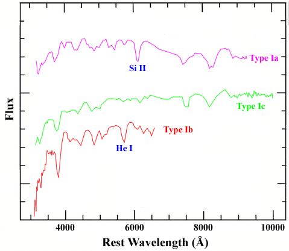
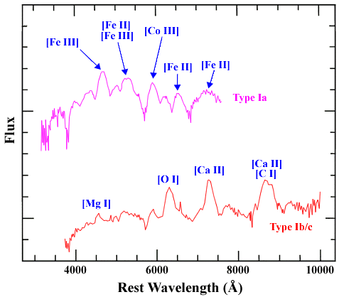

Before 1985, supernovae were classified as either Type I or Type II depending on whether hydrogen was present in their spectra. Through mostly serendipitous discoveries, it became clear that Type I supernovae should be divided into at least 2 and probably 3 distinct types of object. Those that showed a strong silicon absorption feature (rest wavelength = 6355 angstroms) at maximum light were reclassified as Type Ia supernovae (SNIa), those without the silicon absorption but which displayed helium absorption (especially HeI at a rest wavelength of 5876 angstroms) were called Type Ib supernovae (SNIb), and those that did not show either silicon or helium were dubbed Type Ic supernovae (SNIc). These supernova classifications are still used by astronomers today to type all newly discovered supernovae.

The differences between the spectra of SNIa and SNIb become more obvious as the supernova ages. In particular, the helium features in SNIb spectra strengthen, and at late times the spectra show mostly intermediate mass elements like oxygen. This is in contrast to SNIa whose late-time spectra are dominated by iron and cobalt lines.

This dominance of intermediate mass elements at late times indicates that SNIb have a similar origin to Type II (SNII) and SNIc, being massive stars that undergo core-collapse. The key difference between these three types of core-collapse supernova is that SNII are still surrounded by their shell of hydrogen gas, SNIb have lost this but retain their helium shell, and SNIc have lost both their hydrogen and helium shells. This is reflected in the presence of hydrogen in SNII spectra, the absence of hydrogen but the presence of helium in SNIb spectra, and the absence of both hydrogen and helium in the spectra of SNIc.
Still further evidence that the progenitors of SNIb are massive stars, comes from the discovery of a limited number of supernovae which had normal Type II spectra at maximum but the spectra of Type Ib supernovae at late times. That this transition from SNII to SNIb is possible strongly suggests a common origin for both of these types of supernova.